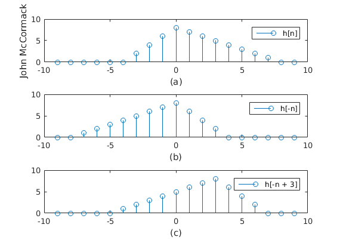

Basic Sequences
Contents
Part (a) Unit Sample
We begin by creating a simple plot of an impulse.
n = -10:10; x1 = n == 0;
Part (b) Unit Step
In part 2 we create the unit step by plotting a 1 anytime n is greater than or equal to 0
x2 = n >= 0;
Part (c) Real Exponential
This part is a little more tricky. First we create a new Unit step that has been shifted by 3 to match the plot. Then we create variables for the decay. This should be between 0 and 1 to create the proper graph. Then by dot multiplying the shifted signal by the exponential output we can get the graph we are looking for.
x3 = n >= -3; decay = .2; expon = 1 * exp(-(n) * decay); x3 = expon .* (x3);
Part (d) Sinusoidal
Here we create a variable for the period and the phase to help make adjustments. The values listed below created an output that closely resembled that of the provided graph.
phase = -1 * pi/4; T = 10; x4 = cos(2 * pi .* n ./ T + phase);
Plotting
Below is all of the needed code to handle the actual ploting of the data. Nothing special here.
subplot(4,1,1); stem(n,x1); legend('Unit Sample'); xlabel('(a)'); title('John McCormack'); subplot(4,1,2); stem(n, x2); legend('Unit Step'); xlabel('(b)'); subplot(4,1,3); stem(n,x3); axis([-10 10 0 3]); legend('Real Exponential'); xlabel('(c)'); subplot(4,1,4); stem(n, x4); legend('Sinusoidal'); xlabel('(d)'); % Special Characters legend('\omega_0 = 0 or \omega_0 = 2\pi');
Flip and Shift
Now we will create a signal, then flip it, and then shift the flipped version.
First Signal (a)
Next we will create the original signal according to the specification.
h = [0 0 0 0 0 0 2 4 6 8 7 6 5 4 3 2 1 0 0]; n = [1:length(h)] - round(length(h) / 2);
Flipped (b)
Below we will flip h[n] to do this we simply copy the matrix, starting from the end and working backwards.
hflip = h(end:-1:1);
Shifting (c)
Next we will take the flipped signal and shift it by 3 bits. To do this we prepend a matrix of 0's to our original matrix. We will also need to shrink the size of our original matrix in order to account for the change.
hshift = [zeros(1,3) hflip(1:end-3)];
Printing
Again we print out all graphs to see the changes we made. To begin we use the 'figure' command to generate a new plot.
figure; subplot(3,1,1); stem(n, h); legend('h[n]'); xlabel('(a)'); ylabel('John McCormack'); subplot(3,1,2); stem(n, hflip); legend('h[-n]'); xlabel('(b)'); subplot(3,1,3); stem(n, hshift); legend('h[-n + 3]'); xlabel('(c)');